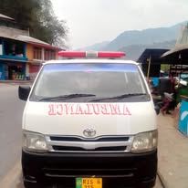

Religious Institute
Madrasa Ali Al Murtaza Cross Namnnota for Women is a distinguished educational institution dedicated to providing Islamic education to women. Currently, around 150 women are enrolled, actively learning the Quran and pursuing other Islamic courses. The institute aims to empower women with a deep understanding of Islamic teachings, fostering spiritual growth, knowledge, and personal development. By creating a supportive and nurturing environment, Madrasa Ali Al Murtaza Cross Namnnota ensures that students not only gain religious knowledge but also strengthen their connection to their faith..
Ambulance Service
Providing quick and reliable ambulance services to ensure timely medical care for the people of Village Namnoota.
Help for Orphans and Needy People
Offering support and resources to improve the lives of orphans and the underprivileged.